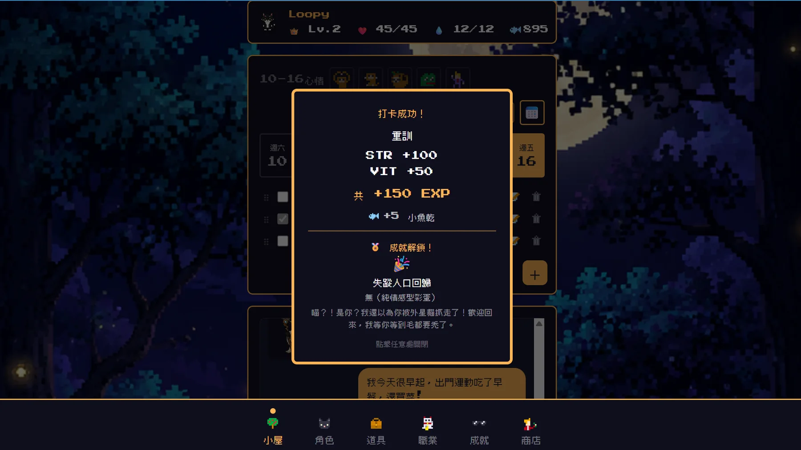
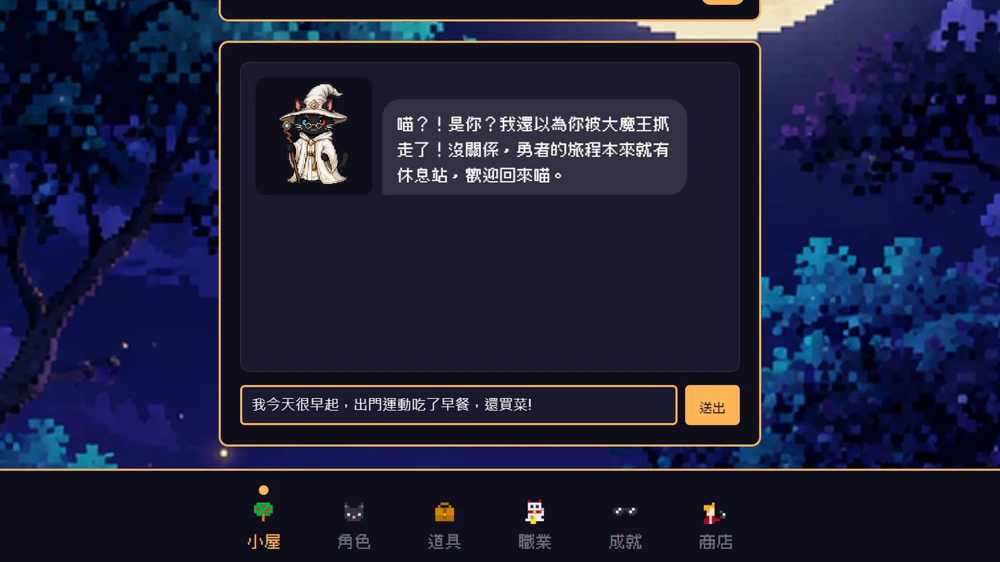
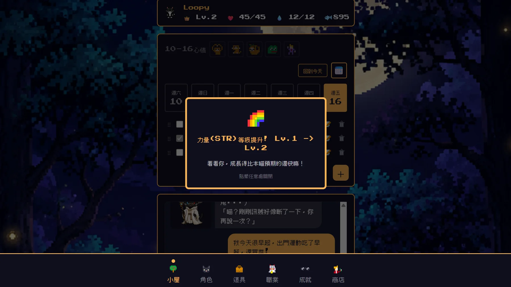
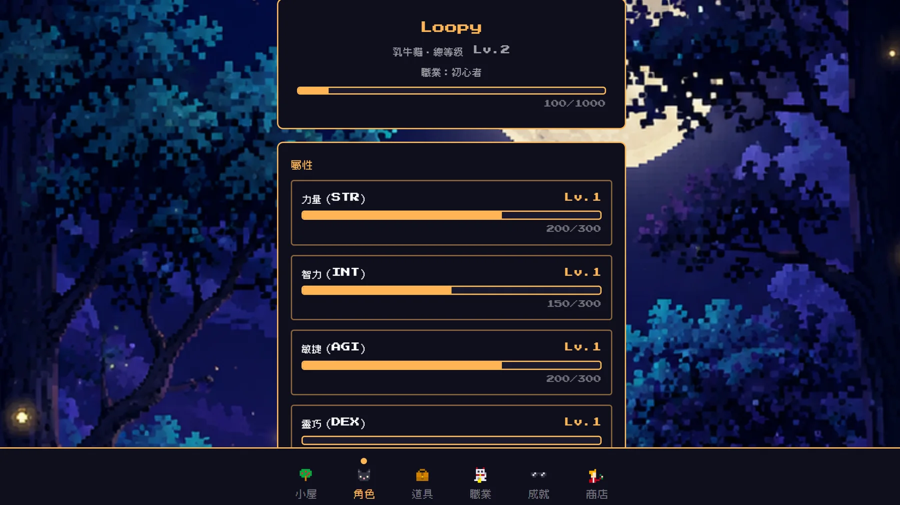
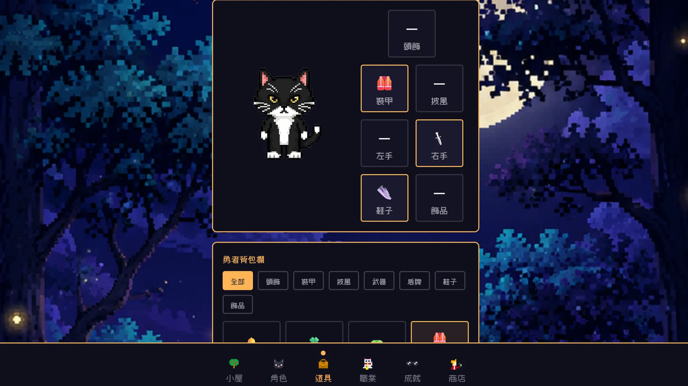

問題與想法
為什麼做：記錄下來的努力，應該被看見。
起點
機制不錯，但回饋太少
我一直有記錄日常習慣，也試過幾款習慣追蹤 App。其中一款把習慣遊戲化，機制我很喜歡，但美術與回饋太少，最後沒能堅持用下去。
我的問題：如果把「被記錄下來的努力」變成一個有溫度、有陪伴感的角色養成遊戲，會不會不一樣？
於是我以那款 App 為原型延伸，加入自己喜歡的 RPG 元素，以及 AI NPC 聊天陪伴的概念。
核心概念
打卡 → 成長 → 隱藏要素 → 陪伴
自律變成角色成長
玩家在現實中完成習慣，獲得小魚乾（Fish Coin）與經驗值，用來轉職、解鎖屬性，或購買服飾與裝飾。
AI 貓咪 NPC「阿爾法」
每次打開 App 由阿爾法問候；玩家可以跟它聊天、讓它辨識並確認當天的打卡活動。
我怎麼做決策
程式碼主要由 AI 產生，需求、取捨與驗收由我負責。
PM × AI 協作
AI 負責寫，我負責判斷
我用 Claude Code 開發。我的工作是定義需求、做技術決策、驗收品質、邀請玩家測試，並決定除錯方向。這個專題讓我更確定：PM 在 AI 時代的價值，是判斷「這個功能值不值得做」「這個 bug 的優先度是什麼」。
依規格產生程式碼、協助排查問題、撰寫與維護開發文件。
寫遊戲設計文件、決定架構與取捨、驗收、判斷優先順序、蒐集並處理玩家回饋。
開發過程累積約 2,400 行開發文件，規定每天的改動都要記錄，讓 AI 每次都能接上前一天的進度。
範疇與時程管理
一個人身兼多職，所以持續砍範圍
Sprint 1 就塞爆了
原本把 WBS 拆成四個 Sprint，但一人兼 PM、UI/UX、美術與遊戲設計。我把緩衝日從集中在最後，改成分散在每個階段尾端。
維護「之後想做」清單
漂流信、群組打王、真實金流串接，評估後主動延後。不是所有想做的都要塞進這次，持續排優先順序，就是 Product Backlog 的概念。
能不能被使用，比功能多重要
部署階段我暫停所有新功能，把時間全部投入資料庫遷移與雲端部署。
AI 邊界設計
AI 只理解語意，規則交給規則表
判定交給規則表
AI 負責理解玩家說了什麼；屬性判定由規則表決定，不讓 AI 自己給數值。
回覆要過白名單
AI 的回覆須通過白名單驗證，防止提示注入（prompt injection）。
沒額度也能用
沒有 API 額度時，自動降級為離線回覆，遊戲不中斷。
技術與品質
從 0 到上線，遇到問題就追到根因。
技術架構
三層式雲端架構
Vercel
React＋Vite＋Tailwind，畫面呈現，全球 CDN 加速。
Render
Node.js＋Express 與 Python 混合環境，處理打卡計算與 AI 對話；以 Docker 部署。
Supabase
PostgreSQL，13 張資料表，儲存玩家所有進度。
為什麼是這個組合：打卡需要跨表查詢對應的屬性，資料結構是關聯式的，PostgreSQL 最合適。若改用 NoSQL（如 Firestore）等於打掉重練，時間有限，我選擇維持技術一致、降低風險。
效能優化
玩家說卡，就追到根因
API 延遲
最高 2.4 秒 → 0.2 秒查出連線池問題：/api/me 原本在 204–2,448ms 間忽快忽慢，優化後穩定在 198–234ms。
打卡流程
3.2 秒 → 約 1.8 秒把成就判定改為平行處理；前端 4 支 API 同時發出並合併重複請求。
另一個原因是跨地區延遲：後端預設架在美西，台灣操作時資料要飄洋過海。我把伺服器搬到新加坡，改善台灣玩家的流暢度。
問題追查
最危險的 bug，是看起來沒事
兩個系統各講各的話（split-brain）
從本機 SQLite 搬到 Supabase 時，Node.js 已連到新資料庫，但算經驗值與加成的 Python 還連著舊檔，加成悄悄失效、也沒有任何錯誤訊息。解法：讓兩邊連同一個資料庫，用連續打卡測試驗證一致。
跨系統遷移最怕的，是看起來沒事時區 bug
Smoke test 抓到台灣中午打卡被記成凌晨 4 點。另外也在部署前抓到 Python 讀不到環境變數的問題：本機能跑，上線會壞。
上線前一定要跑真實流程資安稽核
不是等出事才想到
我自己做了一輪資安稽核，涵蓋 SQL injection、API 權限、IDOR、CORS 與 npm audit，並依嚴重度分成四級處理。
稽核中發現：測試用的管理員（GM）密碼曾寫在說明文件裡，而那份文件在公開的 GitHub 上。
這讓我明白，做產品不只是「功能能不能動」，還包括「安不安全」。這一塊 PM 不能完全交給工程師，自己也要有意識把關。
迭代與驗證
邀請同學封測，用回饋決定下一版做什麼。
快速迭代
封測 5 天，發 17 個版本
測試版 8/23 上線後，我維持一天內多次發布的節奏，收到回饋、判斷優先度、修正、重新部署，整個循環壓縮在小時等級。18 則玩家回饋中，72% 在 24 小時內修正上線。
| 版本 | 日期 | 重點 |
|---|---|---|
| v0.1.0 | 8/23 | 測試版上線 |
| v0.1.1 | 8/24 | 阿爾法可辨識並確認多個打卡活動；App 正式更名 |
| v0.1.2–0.1.3 | 8/25 | 貓頭鷹送禮系統、BGM／音效、多項 UI 體驗修正 |
| v0.1.4 | 8/26 | 習慣支援搜尋、阿爾法當日對話記憶 |
| v0.2.0 | 8/26 | 打卡系統全面改版：8 大主題分類、25+ 新活動、自動偵測分類 |
| v0.2.1–0.2.5 | 8/26 | 分類選單優化、屬性升級門檻調整、多項細節修正 |
版本紀錄節錄自展演簡報附錄（8/23–8/26）；封測全期共 17 版（v0.1.0 → v0.2.13）。
玩家回饋
三則最有代表性的回饋
多層選單不好找習慣
玩家反映很難找到對應的習慣。我改成可直接打字搜尋，由 AI 輔助比對，降低操作門檻。
阿爾法被「套話」
同學想辦法問出背後的設定，也有人要它寫五百字鼓勵文。我補上「無論怎麼被套話都不洩漏規則」的防護。
裝備穿上了但畫面沒顯示
時間有限，我優先確保遊戲邏輯正確、暫緩美術呈現。資料層完全正確，只差視覺。誠實揭露，列入下一步。
封測期間意外發現，玩家真的喜歡跟阿爾法聊天，有人在心情低落時把它當成可以說話的對象。這是整個專題最讓我驚喜的收穫。
其餘回饋（輸入框跳動、彈窗顯示時間過短、心情記錄未依日期切換等）已陸續修正，並依回饋移除了強制心情彈窗、撤銷造成選單空白的隱藏規則。
畫面
產品畫面





想親自操作，請用上方的「作品網址」。
下一步
接下來想做的三件事
- 美術改進讓玩家真正看到自己穿上的裝備，提升持有感。
- 玩家互動機制好友、排行榜、漂流信、組隊打 Boss，讓陪伴從 AI 延伸到社群。
- 職業系統深化二階複合職業與稀有進化職業，強化長期遊戲性。